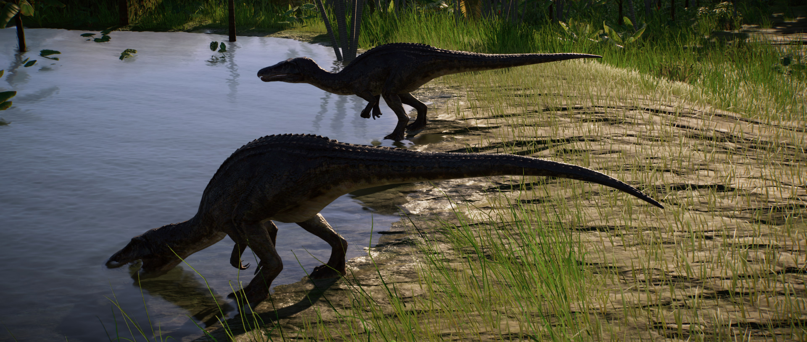

The large theropod Baryonyx can grow up to 10m in length and is notable for its crocodile-like jaws. Baryonyx is primarily a piscivore – although it lives on land, it can grab fish out of rivers with its long claws, and swim in shallow waters to catch prey with its long, serrated teeth. It is believed that Baryonyx is also a scavenger, feeding on the carcasses of smaller dinosaurs on land.